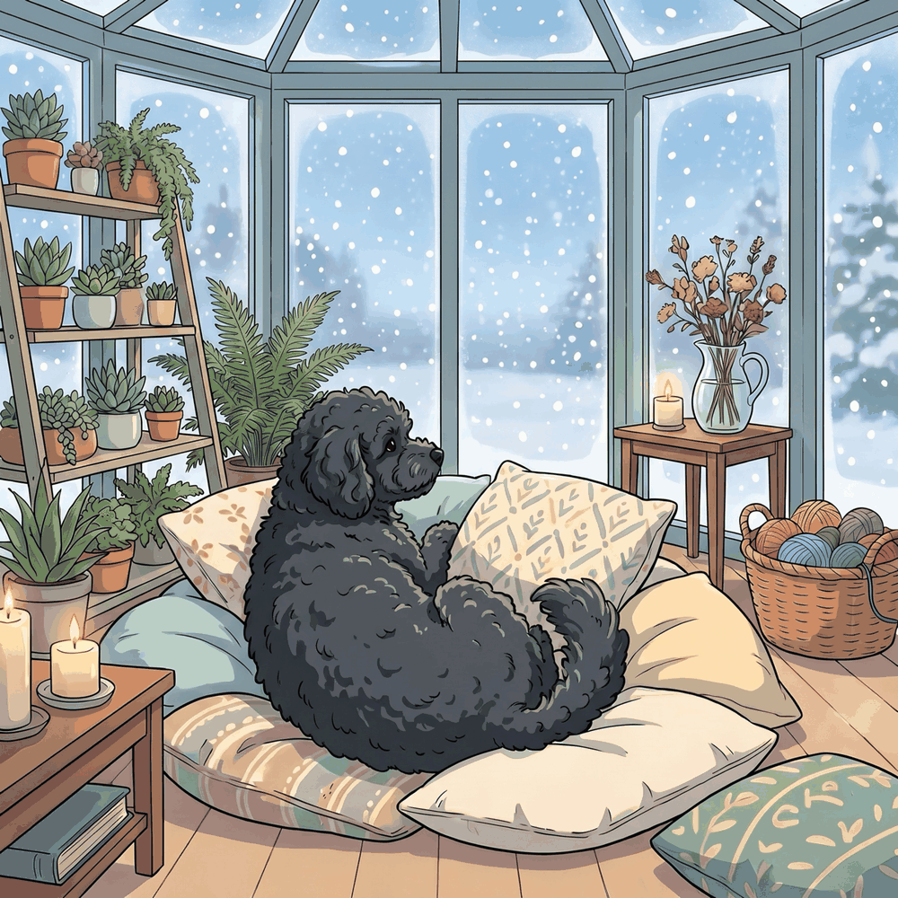

Indoor Exercise for Dogs: Beat the Winter Boredom
A polar vortex does not cancel your dog's energy budget. When it is dangerously cold outside, the walk gets short, but the exercise still has to happen somewhere, and that somewhere is your living room. Here is how to burn real energy indoors without breaking a lamp or your dog.
Winter does not lower the requirement
Most healthy adult dogs need somewhere between 30 minutes and 2 hours of activity a day depending on breed, age, and health, and working breeds sit at the top of that range. The American Kennel Club's guide to how much exercise dogs need is a good gut check. The number does not shrink because the thermometer did. What changes in winter is the format: shorter outdoor sessions, more indoor work, and a bigger share of the load carried by your dog's brain instead of their legs.
The encouraging part: mental effort is genuinely tiring. Fifteen minutes of scent work or training can settle a dog as well as a much longer walk. Winter is less about replacing miles one-for-one and more about swapping in work that costs concentration.

Hallway and stair games
A hallway is a regulation fetch field if you are honest about the throw. Use a soft ball, sit at one end, and let your dog do wind sprints. Rugs or a runner give traction on hard floors, which matters more than people think: sprinting dogs on slick wood is how winter knee injuries happen.
Stairs are a cardio machine for fit adult dogs: toss a toy up, let them charge, and repeat in short sets. Skip stair games for puppies (growing joints), seniors, long-backed breeds like dachshunds, and any dog with joint issues. When in doubt, keep the game on one floor.
Work the nose
Scent work is the most underrated indoor exercise there is. A dog's nose is a precision instrument, and using it is hard work.
- Find it: have your dog wait, hide a few treats around a room, release them to search. Start obvious, get sneakier as they learn the game.
- Snuffle mats and scatter feeding: dinner tossed into a snuffle mat turns a 30-second meal into a 15-minute foraging mission.
- Puzzle feeders: rotate two or three so they stay novel. A frozen stuffed Kong is the classic for a reason.
- The cup game: a treat under one of three cups, shuffle, let them nose out the winner.
Tug, fetch, and flirt poles, safely
Tug is a superb indoor workout with rules: your dog releases on cue, teeth stay on the toy, and the game pauses if they get over-aroused. Pulling back and letting your dog work against steady resistance is plenty; no whipping them around. A flirt pole (a lure on a rope and pole) gives chase-driven dogs real sprint work in a small space, in short bursts with breaks, on a surface with grip. Clear the coffee-table zone first. Your shins and your decor will thank you.
Treadmill basics
A treadmill can be a legitimate winter tool for high-energy dogs if you introduce it gradually: let them stand on it powered off, reward calm, then start at the slowest speed for a minute or two and build up over days. Always supervise, never tie or clip your dog to the machine, and keep sessions short. A treadmill supplements exercise; it does not replace sniffing, play, and time with you.
Training counts as exercise
Two or three ten-minute training sessions a day burn a surprising amount of energy. Polish the basics, teach a spin or a leg weave, or build a "go to mat" that doubles as a settle cue for the evening. Learning is effortful for dogs, and effort is exactly what you are trying to spend.
Warning signs of cabin fever
An under-exercised dog will file a complaint, in their own way. Watch for chewing and other destructiveness, pacing, demand barking, counter surfing, restless nighttime wandering, and wild bursts of the zoomies (we wrote about the weather-zoomies connection, and cooped-up winter dogs are prime examples). These are not disobedience; they are unspent energy looking for an exit. The fix is almost always more structured outlets, not more scolding.
Potty breaks when it is brutally cold
Even on indoor days, bathroom trips still happen outside. In extreme cold keep them short and businesslike: out, potty, back in. Small, short-coated, young, and senior dogs feel the cold fastest and may need a coat even for a two-minute trip. Wind makes it worse than the thermometer suggests, and the National Weather Service's cold weather safety guidance on wind chill and frostbite applies to the dog on the end of the leash too. Wipe paws when you come in, and know your dog's limits; our guide to how cold is too cold for dogs breaks down the temperature ranges by size and coat.
Let the forecast pick the format
The winter question is rarely "exercise or not," it is "outside or inside today?" A quick look at the morning report answers it. WeatherPets has your own dog deliver that forecast, so you will know before breakfast whether today calls for a proper snow romp (see why dogs go wild in the snow) or a hallway fetch tournament.